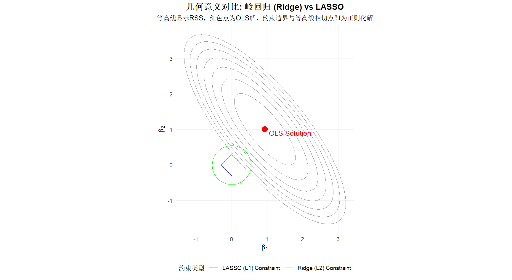
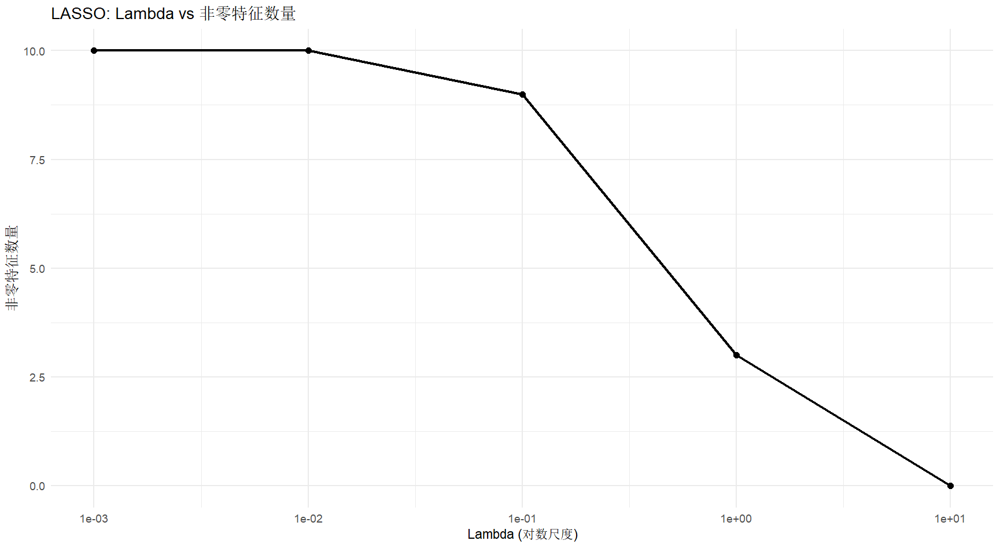

多元线性回归
回归模型为
取 组观察值，即为
即
其中 为 维响应观察值变量， 为 阶解释变量的观察矩阵， 为 阶回归参数向量， 为随机扰动项向量。
回归模型
目标为
求导
可得
这个方程组称为正规方程组
令系数矩阵为 ,常数项向量为
则有
可逆时解得
记
称其为帽子矩阵，是一个 阶对称矩阵，对角线元素 给出第 个观测值距离其余 个观测值有多远，称其为杠杆值。
线性模型拓展
使用其他方法进行拟合可以得到更好的 预测准确性 prediction accuracy 和 模型解释性 model interpretability
- 预测准确性
- 当观测个数 不能远远大于 时，使用最小二乘法容易得到过拟合，方差极大。因此可以考虑以牺牲偏差为代价减小方差，从而提高模型在测试集上的预测准确性。
- 模型解释性
- 多元回归模型中，某些预测变量与响应变量并不是线性关系或者无关。此时移除这些变量可以使得模型更有解释能力。通过 特征选择 或 变量选择 可以实现。
三种拟合方法
- 子集选择
- 选择预测变量的子集，对子集进行最小二乘法，最后选择表现最优的。
- 压缩估计
- 基于全部 个预测变量进行模型拟合，通过正则化缩减估计系数，可以压缩至很小（岭回归）或降为零（LASSO，用于变量选择）
- 降维法
- 将 维预测变量进行线性组合，选取 个 （ ）作为新的预测变量，实现降维，然后执行最小二乘法。
压缩估计
正向理解
假设预测变量之间不满足线性无关，就有 ，于是 无解。倘若预测变量之间近似共线性，方差也会很大导致模型精度降低。我们需要引入惩罚项使回归系数变小，甚至变为0来实现维度压缩。
反向理解
参数的维度过多容易造成过拟合，因此我们在考虑最小化RSS的同时，也要考虑维度的影响。
现在考虑我们的目标函数为
考虑约束
， 是一个常数
可以构造广义拉格朗日函数
其中
理想状态下 应当是 L0 范数。
是一个满射，并且存在单调性。因此通过不断调整 可以实现对 的控制。
岭回归
岭回归的目标为
其中 ，使用 L2 范数
LASSO
Least Absolute Shrinkage and Selection Operator最小绝对收缩和选择算子
LASSO的目标为
其中 ，使用 L1 范数，可以产生更多的稀疏解。从而有压缩维度的效果。

Code
R
1 | if (!require(glmnet)) install.packages("glmnet");library(glmnet) |

1 | #交叉验证 |


1 | # 使用最优lambda进行预测 |
这里LASSO将原来的10个特征压缩到了3个

1 | # 测试不同的lambda值 |
1 | Lambda NonZero_Coefficients RMSE |
